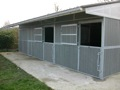
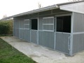
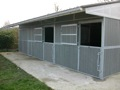

Les planches à tenon et rainure sont non seulement sûres, solides et résistantes aux chocs, mais également flexibles et d’une grande longévité.
Ces planches sont faciles à placer soi-même, on peut les utiliser pour la construction neuve et la rénovation d’écuries mais aussi pour les murets de soutènement de manèges équestres. Grâce au profilé de renfort breveté de Govaplast, les planches se prêtent en outre parfaitement à de nombreuses applications extérieures telles que clôtures et palissades.
Ce produit se travaille comme le bois tendre. Il peut être vissé, cloué, scié, foré, raboté, fraisé, riveté, etc. La qualité de ce produit en plastique recyclé s’exprime entre autre par une haute densité. Celle-ci est obtenue par un mélange homogène de matières premières et par un cœur dense, ce qui augmente largement les possibilités techniques de ce matériau.

Pour rénover ou renforcer l’intérieur de vos boxes, nous vendons également des panneaux en plastique recyclé de qualité. La plupart des panneaux mesurent 1500 x 3000 mm et ont une épaisseur de 6 à 18 mm. Ils sont disponibles en brun, noir, vert et gris.